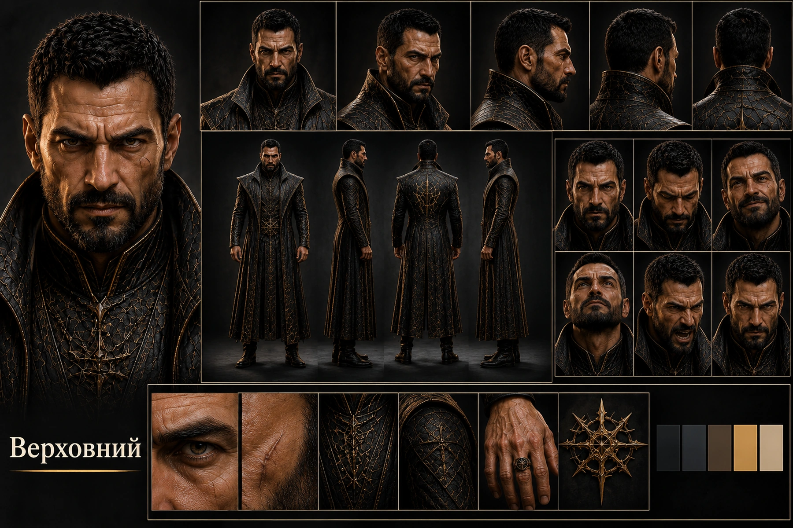

OVERVIEW
The Supreme
This page records the approved visual design of the Supreme.

CANON AND STORY ROLE
Confirmed information
The checked text of the first book does not provide sufficiently unambiguous information to describe this character’s origin, position or plot role. These details are not invented and can be added after checking the relevant manuscript.